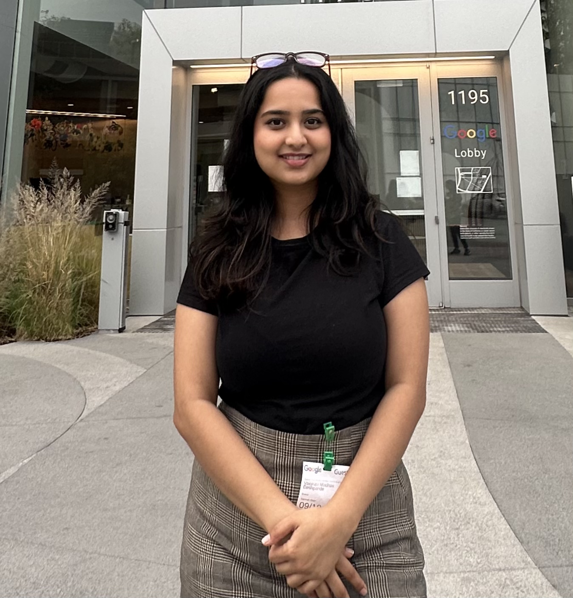
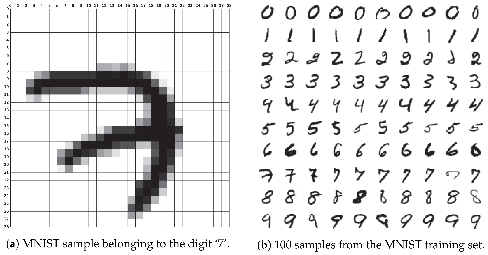
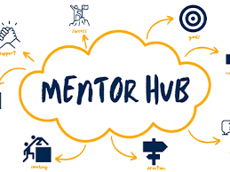
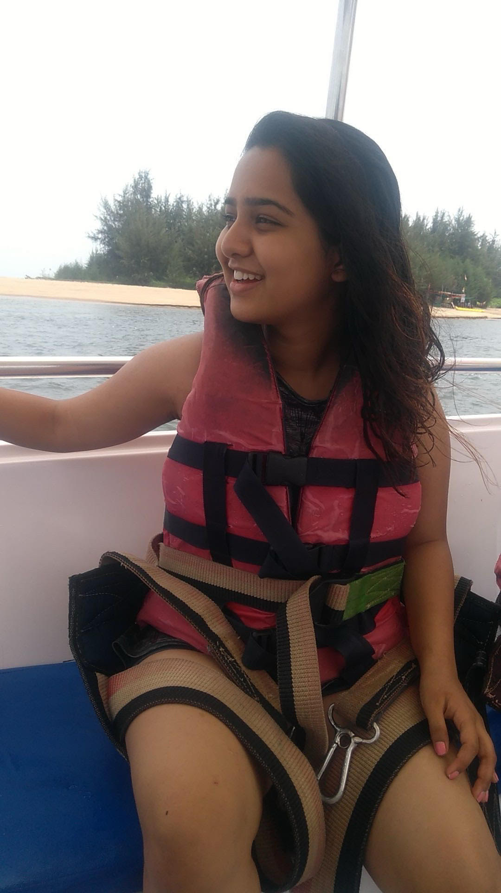

AI · Machine Learning · Software Engineering
Vaibhavi Deshpande
Agentic AI, Machine Learning, and Full Stack Engineering
I build autonomous AI systems, train models that move real metrics, and ship full stack software that scales, turning data into decisions.

About Me
I am a software engineer working at the intersection of agentic AI, machine learning, and full stack engineering. Whether it is a production multi agent platform, a RAG pipeline, or a clean event driven backend, I care about systems that are reliable, measurable, and built to last.
Languages and Frameworks
PythonC++SQLTypeScriptFastAPINode.jsDjangoReact.jsAgentic AI
LLM AgentsLangChainLangGraphRAGEmbeddingsMCPOpenAI and ClaudePineconeMachine Learning
PyTorchTensorFlowScikit LearnXGBoostHuggingFaceOpenCVPandasNumPyCloud and Data
AzureAWSDockerKubernetesRedisKafkaPostgreSQLMongoDBPower BICertifications: Microsoft Azure Fundamentals, DeepLearning.AI Machine Learning, Databricks Gen AI Fundamentals
Work in AI and Agents
Autonomous, multi agent systems where language models reason, route, and act safely in production.
Allyzent
Since 2025AI Software Engineer, multi agent crypto intelligence
- Built and deployed a production multi agent platform for real time recommendation, monitoring, and autonomous risk analysis with FastAPI, Redis, and PostgreSQL.
- Engineered a three provider LLM failover SDK across Anthropic, OpenAI, and Moonshot, with context aware routing and Pydantic validated outputs.
- Designed event driven orchestration with async workers, Redis pub sub, and SSE, plus AI safety controls including confidence gating, human in the loop, and monitoring.
BEST Inc.
2025Software Engineer, streaming AI agents
- Deployed AI agents on Kafka event streams that evaluate system state and trigger autonomous operational decisions in real time.
- Connected agent reasoning to live ERP signals to dynamically recalculate forecasts, scheduling, and resource allocation.
Featured AI Projects
AI Powered Order Validation
A hackathon winning FastAPI backend with a Claude agent that parses emails and validates orders. Object oriented and containerized with Docker, reaching 99 percent accuracy and reducing manual work by 80 percent.
Multi Agent Medical Intelligence
Claude with LangChain and LangGraph and RAG over PubMed and recency aware web search, with deterministic orchestration via FastAPI microservices for evidence backed insights.
Work in Machine Learning
From exploratory analysis to deployment, with predictive models, RAG pipelines, and rigorous validation that move real metrics.
University of Central Florida
2024 to 2025Research Assistant, clinical machine learning and RAG
- Processed and standardized more than one million clinical records, with exploratory analysis and hypothesis testing for stronger features.
- Tuned supervised models for a 15 percent RMSE reduction with rigorous validation.
- Built a RAG system over clinical data using HuggingFace and Pinecone, improving top k retrieval by 30 percent.
Allyzent and BEST
2025Applied ML, forecasting, anomaly detection, and ensembles
- Built an XGBoost ensemble on multi year OHLCV data with about 55 features, fused with language model news sentiment.
- Delivered anomaly detection at 90 percent precision on ERP sensor data for downtime signals.
- Built demand forecasting, inventory optimization, and predictive maintenance across industrial environments.
Featured Machine Learning Projects
Retail Recommendations
BERT embeddings and K Means clustering for personalized product recommendations.

Handwriting Recognition
Convolutional networks on EMNIST and 10,000 custom samples, reaching 98 percent accuracy.
Credit Card Fraud
Vesta dataset with feature engineering and a tuned XGBoost model, reaching 96.7 percent accuracy.
Fraudulent Job Postings
A BERT and DistilBERT classifier, reaching 99.05 percent accuracy.
CLIP Model Quantization
Quantized the CLIP vision and language model with ONNX Runtime to cut memory and compute for low resource devices, tested on CIFAR 100. The quantized model held about 80 percent validation accuracy while running faster than the full precision baseline.
Twitter Sentiment Analysis
Fine tuned BERT to classify tweet sentiment as positive, neutral, or negative, with text cleaning, tokenization, and label encoding. Reached about 90 percent accuracy with balanced precision and recall.
News Summarization
Abstractive news summarization on the CNN DailyMail dataset using a sequence to sequence LSTM with attention and a T5 transformer, evaluated with ROUGE and BLEU.
Work in Software Engineering
Full stack, event driven systems built to scale, with clean APIs, solid tests, and smooth delivery.
One Community
2024 to 2025Software Engineer, full stack
- Built backend APIs with Node.js and MongoDB and React.js components, improving modularity.
- Wrote Jest unit and integration tests, ran code reviews, and maintained CI and CD pipelines.
PALASH Healthcare
2020 to 2022Software Engineer Intern, full stack and health technology
- Built full stack electronic medical record workflows with React, Redux, Node, and Express REST APIs for registration, records, and scheduling.
- Automated data entry with AWS Textract OCR, reducing manual entry by 70 percent, and built clinical NLP with BioBERT and ClinicalBERT.
BEST Inc.
2025Software Engineer, backend and streaming
- Built event driven backends with Kafka messaging, lowering reporting latency by 50 percent.
- Built distributed services for real time ERP sensor and operational data streams.
Featured Project

MentorHub
A Django and React platform connecting alumni mentors with student mentees, with secure authentication, profiles, matching, and live messaging. It reached 200 relationships in three months.
Engineering principles I work by
I like systems that are easy to reason about, well tested, and ready to grow, from a single FastAPI service to distributed streaming architectures.
My Journey
The full timeline of every role along the way.
AI Software Engineer, Allyzent
Dec 2025 to PresentProduction multi agent AI platform for real time crypto intelligence, including LLM agents, a failover SDK, event driven orchestration, and AI safety controls.
Software Engineer, BEST Inc.
Jun 2025 to Dec 2025Kafka event driven backends and streaming AI agents, with ML anomaly detection at 90 percent precision and predictive maintenance. Lowered reporting latency by 50 percent.
Software Engineer, One Community Inc.
Oct 2024 to May 2025Full stack feature delivery with Node.js and MongoDB APIs, React.js components, Jest tests, code reviews, and continuous integration and delivery.
Research Assistant, Machine Learning, University of Central Florida
Aug 2024 to May 2025Clinical machine learning and RAG, with more than one million records, a 15 percent RMSE reduction, and 30 percent better retrieval relevance.
Software Engineer Intern, PALASH Healthcare
Jul 2020 to Aug 2022Full stack electronic medical records with React, Redux, Node, and Express, AWS Textract OCR that reduced manual entry by 70 percent, and clinical NLP pipelines.
Data Analyst Intern, Kaizen Chemtech
Jan 2020 to Jun 2020Automated data workflows with SQL, Python, and Excel and Power BI dashboards, with predictive models at about 90 percent accuracy that cut inventory costs by about 12 percent.
M.S. in Computer Science
University of Central Florida, GPA 3.9, 2022 to 2024
B.Tech in Electronics and Telecommunication
Pune University, 2018 to 2022
Beyond the Code

Embracing Challenges
My love for adventure sports, including scuba diving, rafting, and bungee jumping, is more than a hobby. It is part of my mindset.
Embracing new challenges, staying calm under pressure, and pushing boundaries is something I bring to my work every day. It keeps me curious, driven, and always ready for what is next.